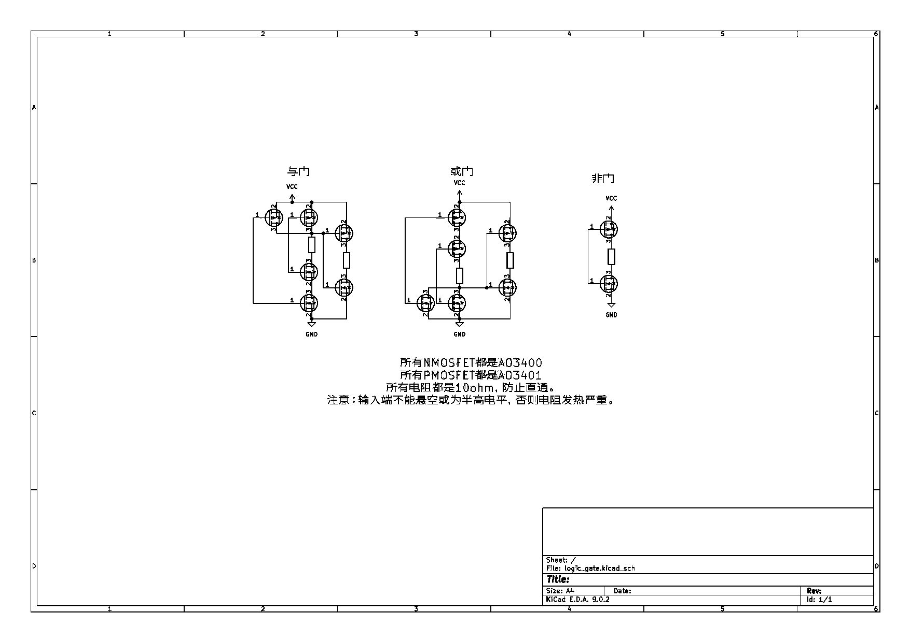
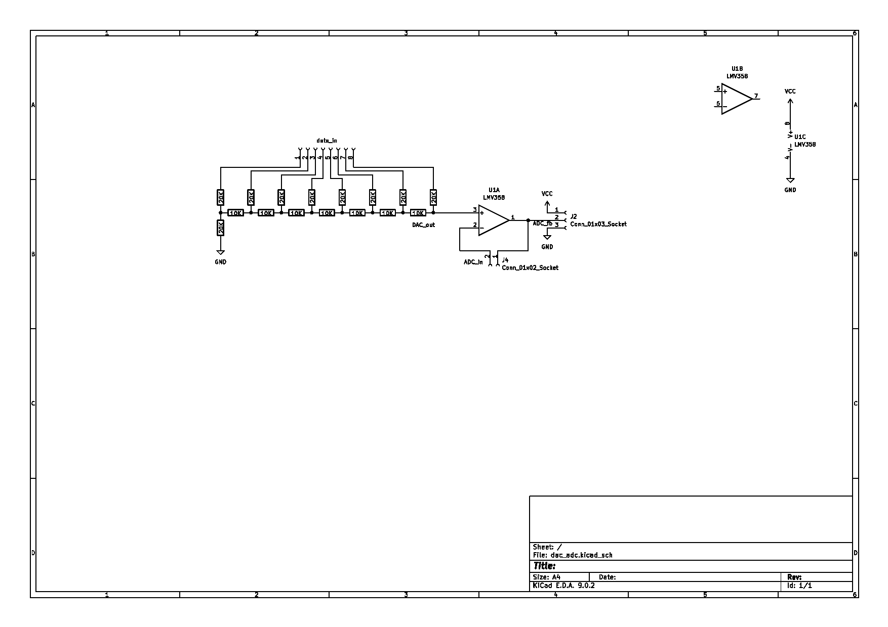
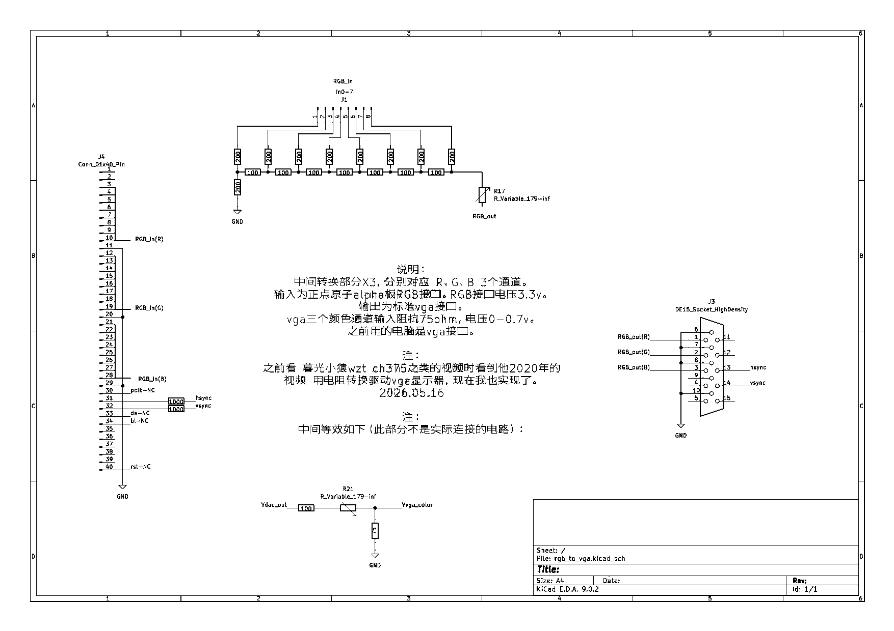

做项目时方便方案评估及选型。
电阻--功率。
电容--耐压。1mf目前只发现电解电容
电感--电流上限。10nh开始为高频电感
二极管--1N4007、UF4007、RHRG30120。
双极型晶体管（BJT，通常简称三极管）
NPN型：8050
PNP型：8550
场效应晶体管（FET）
结型场效应管（JFET）：暂无
金属氧化物半导体场效应管（MOSFET）
N沟道： IRF3205（TO-220封装）、IRFP250、IRFP460、AO3400
P沟道:AO3401
项目 双极型晶体管（BJT） 场效应管（FET）
导电载流子 电子+空穴（双极） 电子或空穴（单极）
参数：
增益带宽积
噪声
轨对轨
型号：uA741、NE5532、OP07、LM324、LM339
LMV321ILT 丝印 K177
分立器件实现逻辑门：（避免同一个集成电路未使用到的门，而且更灵活）

与或非门不独立，输入都过非然后与然后非等价于或门。
dac和adc是模拟电路和数字电路之间的桥梁。
DAC和ADC已可用电阻+运算放大器+控制器实现。型号有各种限制。
T型电阻网络dac
阻值一般在1k-100k，我取10k。
如果需要带负载则接一个轨对轨运算放大器即可。（注意增益带宽积和压摆率）
分类：并联比较型（高速低精度）；逐次比较型；双积分型（高精度低速）；等
逐次比较型：通过dac输出和模拟信号电压比较结果调整dac输出，使两者电压趋于一致。
电路图：dac和adc有很多地方可以复用。而且多和控制器一起使用，所以借用控制器做控制。

dac模式：短接J4，data_in输入，J2-pin2输出。
adc模式：data_in输入dac值，ADC_in为要转换的电压输入，J2-pin2反馈回控制器。
``` unsigned char adc_fb() { return (GPIOB->IDR & GPIO_IDR_IDR1); }
void dac(unsigned char dac_data) { int buffer; buffer = GPIOA->ODR; buffer = GPIOA->ODR & (~0xff); buffer = buffer | dac_data; GPIOA->ODR = buffer; }
unsigned char adc() { unsigned char i; unsigned char value = 0x80; unsigned int j; FILE *f;
for(i=0; i<8; i++)
{
dac(value);
for(j=0;j<1000;j++);//delay
if(adc_fb())
{
value = value & ~(1 << (7 - i));
}
if(i < 7) value = value | (1 << (6 - i));
}
return value;
} ```
eeprom：AT24C02
nor flash：W25Q128
nand flash：spi接口-W25N01GVZEIG raw-MT40A256M16LY（未使用）
获取信息，用于机器决定作出什么动作
直接测力：
原理：力敏电阻。
用法：测量电阻，算出力。
衍生-惯性传感器-加速度：
原理：测量质量块压力。
用法：MEMS，型号：ICM20608。
衍生-惯性传感器-角加速度：
原理：直线振动质量块，测量科里奥利力
用法：MEMS，型号：ICM20608。
衍生-大气压强传感器：
原理：测压力，型号？。
用法：BMP280,读数+计算+温度校正。
典型关系： R = R0 * e ^ (B * (1 / T - 1 / T0))
NTC热敏电阻的 B值（材料常数）通常在 2000K 到 6000K 之间。K 代表开尔文（Kelvin）
MF52 50K B值3950 5%精度
MF52 10K B值3950 1%
R = R0 * math.exp(B * (1/(T+273.15) - 1/(25+273.15)))
R = 9240
B = 3950
R0 = 10000
T = 1 / (math.log(R / R0) / B + 1 / (25+273.15)) - 273.15
print(T)
PT100 0度--100ohm 100度--138.5ohm
关系近似： R = R0 * (1 + alpha * T)
其中 R0=100ohm alpha约等于0.00385/度
当然，实际关系并不是完全线性的，因此国际标准使用更精确的 Callendar–Van Dusen 方程 来描述 PT100 的温阻特性。
PT100 属于 正温度系数（PTC） 温度传感器。
金属电阻率随温度变化的规律。
对于金属：温度升高->晶格振动增强->电子运动受到更多碰撞->电阻增加。
PT100 精度等级
国际标准：IEC 60751 https://www.scribd.com/document/940669658/IEC-60751-2022
PT1000
赛贝克（seebeck）效应
PN结正向压降随温度变化
大约：-2mV/摄氏度
原理：光敏电阻、光电二极管、光敏三极管
图像 CMOS 图像传感器 一般使用光电二极管
原理：晶振。
常用晶振：32.768KHz、8MHz、12MHz
麦克风
超声波-NU1ME21TR-1
原理：霍尔效应、磁阻效应。
型号：SS49E、SS495A1、KMZ10
目的：实现图形显示。RGB和VGA协议简单直接。vga是一种通用的显示信号传输协议。
理论：RGB接口和VGA接口时序很像，只不过一个是数字的一个是模拟的。将RGB的8位数字信号转为模拟电压即可。

1602
12864
单色oled-ssd1306
彩屏-st7735、st7789
ov7670（未使用）
视频采集卡-MS2130
墨水屏-ssd1680
以太网phy-YT8010AN
USB转以太网：rtl8152
wifi-rtl8188eus、esp8266
蜂窝-Air724UG-NA、ME3630、EC20、AG35-EUT、AG598E-EU、MT5710-CN、移远Cat1
GPS定位-ATGM336H
DM9000（未使用）
USB转串口：MCP2200、CH343
DAC0832 被T型电阻网络DAC取代
ds18b20 被PT100取代
mpu6050 半导小芯显示新设计不推荐使用 被ICM20608取代
ad转换的：ADC0809、ADC0832、DAC0832等 被电阻等取代
音频codec（wm8960、wm8962、ssm2518、ssm2529、es8311） 被adc/dac取代
与门-74HC08
或门-74HC32
非门-74HC04
其它文件夹